Тема, мета лабараторної роботи
Тема: ВЗАЄМОДІЯ WEB-ЗАСТОСУВАНЬ З СИСТЕМОЮ КЕРУВАННЯ БАЗАМИ ДАНИХ (СКБД).
ОБРОБКА РЕЗУЛЬТАТІВ SQL-ЗАПИТІВ У PHP-СЦЕНАРІЇ.
Мета: придбати практичні навички підключення до СКБД, вибора бази даних, виконання запиту,
отримання результатів, відключення від СКБД.
Постановка задачі:
Відповідно до варіанту індивідуального завдання Таблиці №1 (номер варіанта відповідає останій
цифрі
студента у списку групи, наприклад, студент 18 за списком – буде виконувати 8 варіант) потрібно:
визначити класи об’єктів предметної області, дані які будуть зберігатися у БД;
створити інфологічну модель;
нормалізувати реляційну базу та перейти до датологічної моделі;
Для прискорення та полегшення розробки інфологічної моделі , яка містить таблиці і зв’яки між
ними,
рекомендовано встановити програму MySQL Workbench.
Реалізувати БД в СУБД MySQL використовуючи веб-інтерфейс для роботи із сервером MySQL
phpMyAdmin.
Написати скрипти на PHP для внесення даних до БД, виведення даних на екран та для пошуку даних в БД.
Висновки
У ході данної лабораторної роботи ми навчились користуватись mysql, обробляти запити до mysql.
Це
була неймовірно важка лаба, якби не сувмісна праця, ми б так і не досягли бажаного результата,
але
то не важливо, головне що зробили. Тепер можна через сайт виконувати пошук по ключовим словам, також
можна уведені дані вносити до бд. Ще ми глянули на 8лабу і охуїли, там пздц, можете якось
упростити
завдання будь ласка, а так це була класна лаба.
Хід роботи:
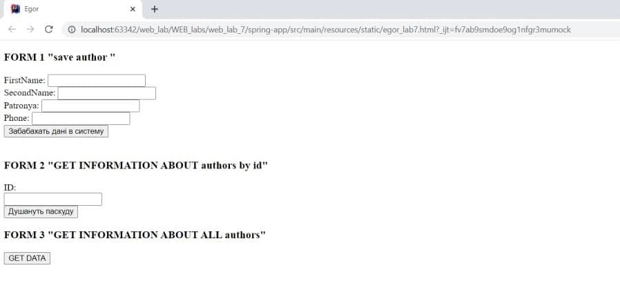
Інфологічна модель – Архів фотографій
База даних створюється для технічного обслуговування архіву. Користуватися нею будуть лише
працівники архіву.
Відповідно до предметної області база даних має містити такі сутності: фотографії, автори, місця
зберігання.
Стуності фотогографії мають містити такі атрибути: дата створення, автор, ступінь краси, місце
зберігання.
Автори – ІПН, ПІБ, номер телефону.
Місця зберігання – номер відділу, опис, кількість фотографій.
Інфологічна модель:
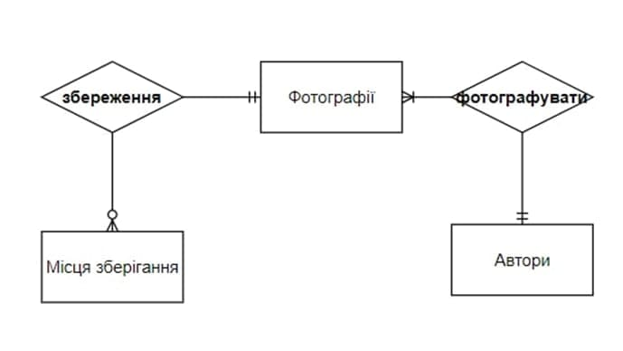
Додамо до кожної сутності унікальний ідентифікатор.
Оскільки сутність “Автори” містить атрибут ПІБ який складається з 3 окремих слів, то порушує
1НФ.
Розіб’ємо атрибут ПІБ на 3: прізвище, ім’я, по-батькові. Оскільки сутність “Автори” містить
атрибут
“кількість фотографій”, який весь час обраховується і його можна отримати викликавши функцію
COUNT
видалимо його.
Будуємо даталогічну модель:
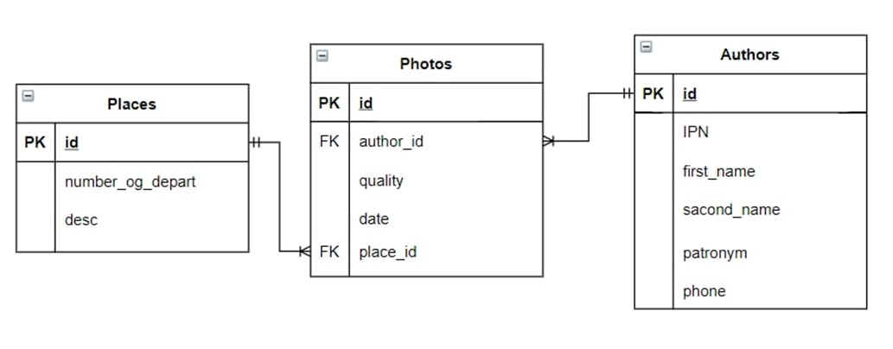
create table place
(
id bigint not null,
description varchar(255),
number_of_depart bigint,
primary key (id)
);
create table author
(
id bigint not null
primary key,
first_name varchar(255) null,
patronym varchar(255) null,
phone varchar(255) null,
second_name varchar(255) null
);
create table photos
(
id bigint not null
primary key,
date varchar(255) not null,
quality varchar(255) not null,
author_id bigint null,
place_id bigint null
);
create index FKcc15lc58klmdxvgs5r5vpa84n
on photos (place_id);
create index FKsg9oj97lr73olxv03f7yxiila
on photos (author_id);
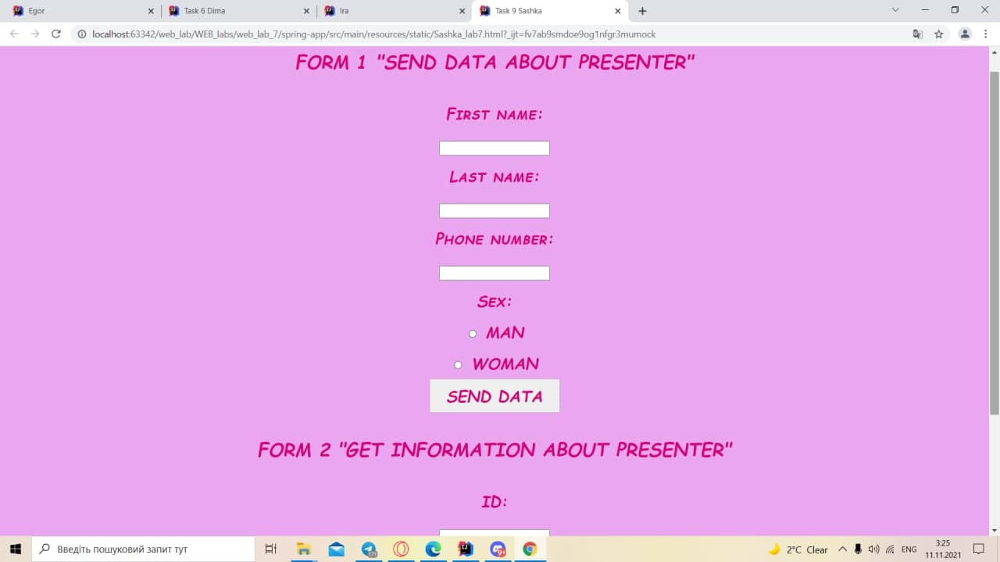
Предметна область: «Програми передач для телебачення»
База даних створюється для інформаційного обслуговування та контролю програм передач для
телебачення. Вона повинна містити дані про передачі, канали, ведучих та телестудії, надавати
можливість отримувати різні звіти.
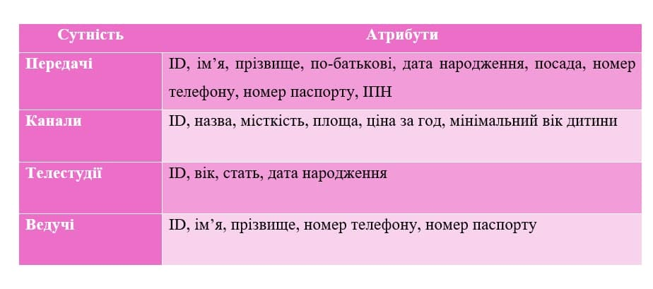
Для побудови даталогічної моделі необхідно мати інфологічну модель предметної області.
ER–діаграма
дитячої кімнати приведена на наступному рисунку. Я використовувала нотацію Чена для побудови
інфологічної моделі (ER-діаграми).
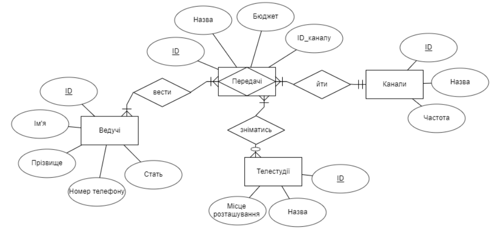
Етап перетворення елементів ER–діаграми у таблиці.
Згідно з першим правилом перетворення сутність з атрибутами перетворюється у таблицю БД з
відповідними атрибутами за типом.
Отже, в результаті перетворення отримаємо:
• Сутність Передачі Таблиця Іграшки
• Сутність Канали Таблиця Зони
• Сутність Телестудії Таблиця Працівники
• Сутність Ведучі Таблиця Білети
• Зв'язок Передачі-Канали «йти» Таблиця Передачі_Канали
• Зв'язок Передачі-Ведучі «вести» Таблиця Передачі_Ведучі
Виконуємо інші правила перетворення елементів ER–діаграми у таблиці, як-от перетворення зв’язку типу
1:M у зовнішній ключ між двома таблицями, перетворення кожного зв’язку зі ступенем більше двох
та
зв’язок, що має атрибути, на таблицю БД, реалізація зв’язку 1:1 в межах однієї таблиці,
враховуючи
винятки, та реалізація бінарного зв’язок типу N:M реалізується за допомогою допоміжної таблиці.
Етап нормалізації.
Проаналізуємо атрибути моделі та знайдемо явні порушення.
Перша нормальна форма
Наявність зв’язків M:N, як-от «Передачі-Канали» та «Передачі-Ведучі», є порушенням 1НФ. Щоб
позбутися такого зв’язку потрібно добавити ще одну таблицю, наприклад «Передачі_Канали» та
«Передачі_Ведучі», які будуть бінарними зв’язками.
Виконаємо вищезазначені зміни.
Висновок: Таблиці не містять складних атрибутів. В кожній комірці зберігається лише одне
значення
атрибуту, а не масив даних. Немає зв’язків M:N. Отже таблиця приведена до 1-ї НФ.
Друга нормальна форма
Висновок: Оскільки в кожній сутності присутній ідентифікатор (майбутній первинний ключ), то всі
таблиці автоматично знаходяться у 2НФ.
Третя нормальна форма
Висновок: Жодне відношення не порушує 3НФ, тому що нема атрибутів, які не залежать від сутності,
до
якої вони належать, та які знаходяться у транзитивній залежності між собою.
При побудові даталогічної моделі я застосовувала обмеження цілісності. У всіх таблицях присутній
унікальний первинний ключ (PRIMARY KEY), а там, де потрібно, ввела зовнішні ключі (FOREIGN KEY).
Забезпечила унікальність ключового поля чи комбінації значень ключових полів (UNIQUE). Продумала
наперед введення порожніх значень (NOT NULL / NULL) та задання умови на значення атрибуту
(CHECK).
Для побудови даталогічної моделі я взяла за основу схему даних в MSAccess2016
(за спрощеною моделлю). Саме дана модель була зроблена за допомогою сервісу app.diagrams.net. В
якості нотації для побудови даталогічної моделі я обирала ту саму, що і для інфологічного
моделювання.
По готовій інфологічній моделі побудована спрощена даталогічна модель, представлена на
наступному
малюнку:
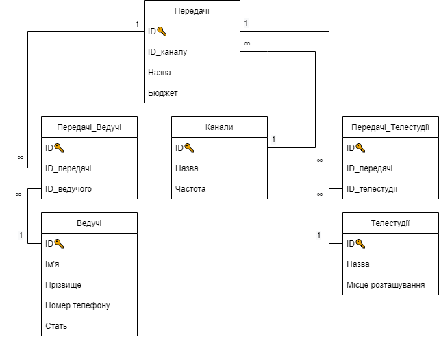
create table program_presenters
(
program_id bigint not null,
presenters_id bigint not null
);
create index FK764n74t7qy7kd7wa24ld2wtxn
on program_presenters (presenters_id);
create index FKfihd3ayjkyevge5s21lsip59u
on program_presenters (program_id);
create table program
(
id bigint not null
primary key,
budget bigint null,
title varchar(255) null
);
create table presenter
(
id bigint not null
primary key,
f_name varchar(255) null,
phone varchar(255) null,
s_name varchar(255) null,
sex varchar(255) null
);
create table program_studios
(
program_id bigint not null,
studios_id bigint not null
);
create index FKncythvq1vcl5d6i04ocd84n4v
on program_studios (program_id);
create index FKqn197di5ukq1m8y9pv26xu0j
on program_studios (studios_id);
create table studio
(
id bigint not null
primary key,
location varchar(255) null,
title varchar(255) null
);
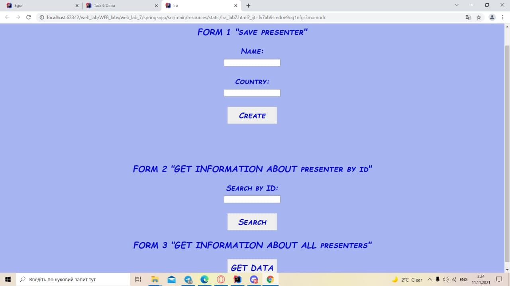
Предметна область «Аптеки».
База даних створюється для інформаційного обслуговування адміністраторів, продавців та інших
робітників аптеки. БД повинна містити дані про аптеки та ліки, котрі є в наявності, надавати
можливість відслідковувати кількість товару та отримувати всілякі звіти.
Після аналізу предметної області можна виділити ряд сутностей, і приступити до проектування
інфологічної моделі.
Виділимо базові сутності цієї предметної області:
Аптеки: ID, адреса
Виробники: ID, назва, країна
Ліки: ID, назва, ціна, описБ
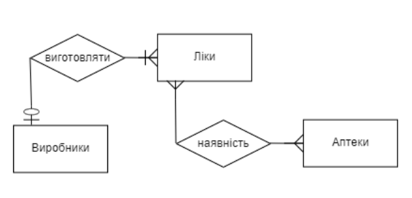
Зв'язок багато до багатьох формалізований асоціативною сутністю
Наявність з ID ліків, ID аптеки та кількістю ліків.
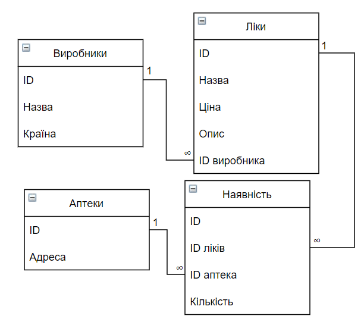
CREATE TABLE Pharmacies
(
ID int NOT NULL AUTO_INCREMENT,
Location varchar(255) NOT NULL,
PRIMARY KEY (ID)
);
CREATE TABLE Producers
(
ID int NOT NULL AUTO_INCREMENT,
Name varchar(50) NOT NULL,
Country varchar(50) NOT NULL,
PRIMARY KEY (ID)
);
CREATE TABLE Medicines
(
ID int NOT NULL AUTO_INCREMENT,
Name varchar(50) NOT NULL,
Description varchar(50) NOT NULL,
Price int NOT NULL,
ProducerId int,
FOREIGN KEY (ProducerId) REFERENCES Producers (ID),
PRIMARY KEY (ID)
);
CREATE TABLE Available
(
ID int NOT NULL AUTO_INCREMENT,
MedicineId int,
PharmacyId int,
Price int NOT NULL,
FOREIGN KEY (MedicineId) REFERENCES Medicines (ID),
FOREIGN KEY (PharmacyId) REFERENCES Pharmacies (ID),
PRIMARY KEY (ID)
);
БД: розкладу руху залізничного транспорту
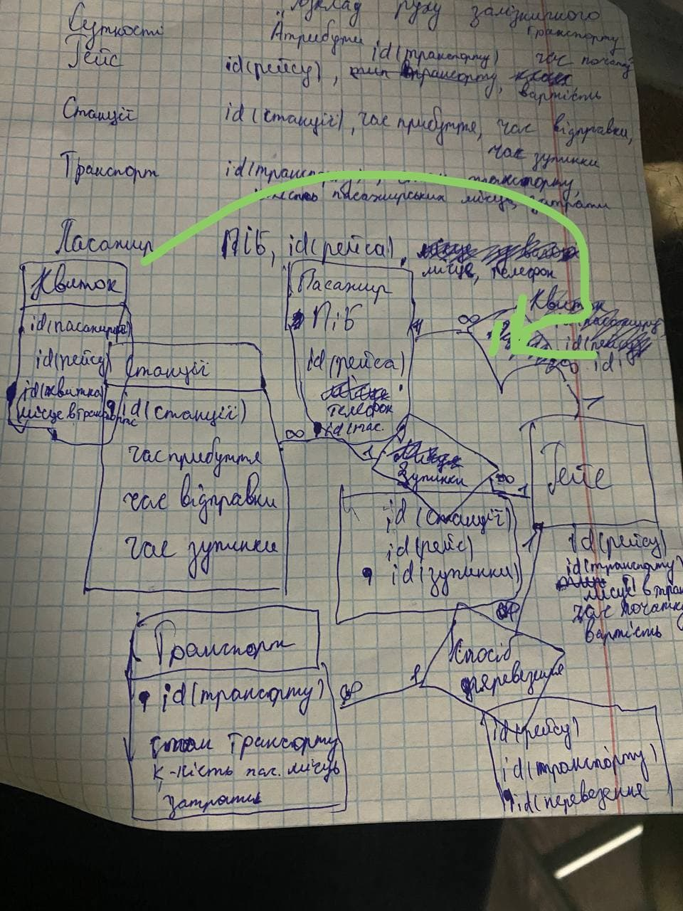
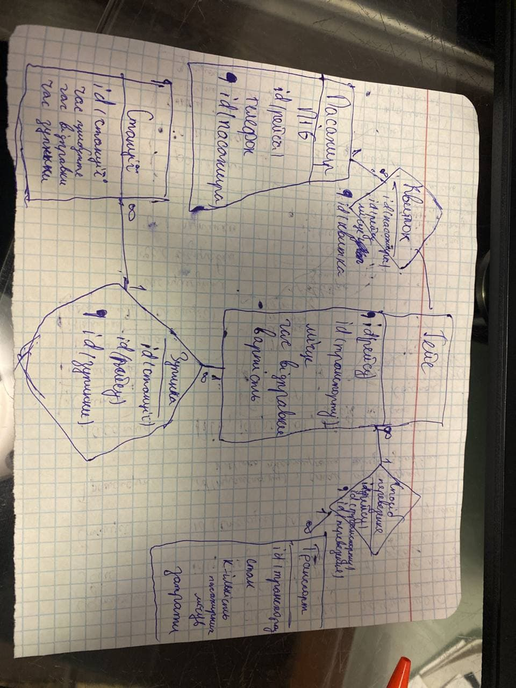
create table passenger
(
id bigint not null
primary key,
name varchar(255) null,
phone varchar(255) null,
sur_name varchar(255) null
);
create table transport
(
id bigint not null
primary key,
costs double null,
passenger_seats int null,
state bit null
);
create table race
(
id bigint auto_increment
primary key,
date varchar(255) null,
place varchar(255) null,
price double null,
transport_id bigint null
)
engine = MyISAM;
create index FK34v1jqm91hojils3wrnyjw9vq
on race (transport_id);
create table station
(
id bigint not null
primary key,
arrive_at varchar(255) null,
dispatch varchar(255) null,
stop varchar(255) null
);